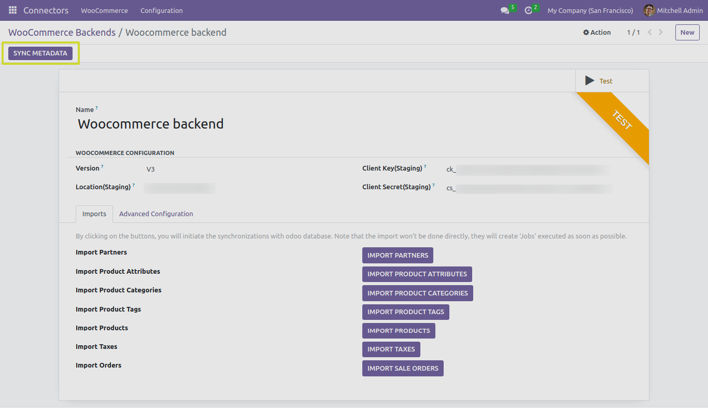

Sync MetaData
In this section, we will explore the functionality of the “SYNC METADATA” button when working with the Odoo Woocommerce Connector.
Next Steps
In the upcoming sections, we will provide detailed instructions on how to use the “IMPORT PARTNERS” button and it’s advance configuration settings.